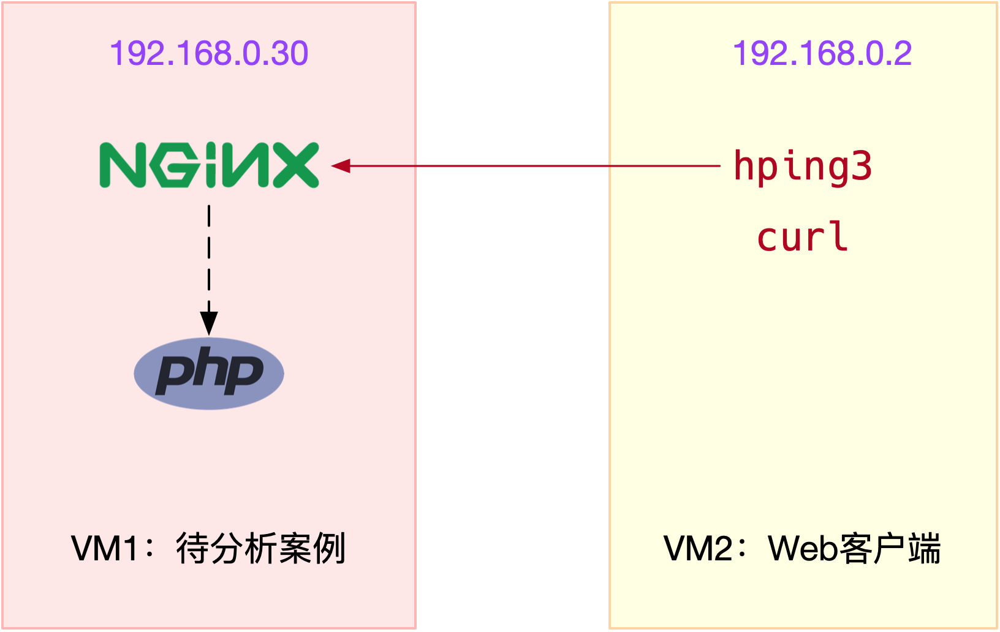
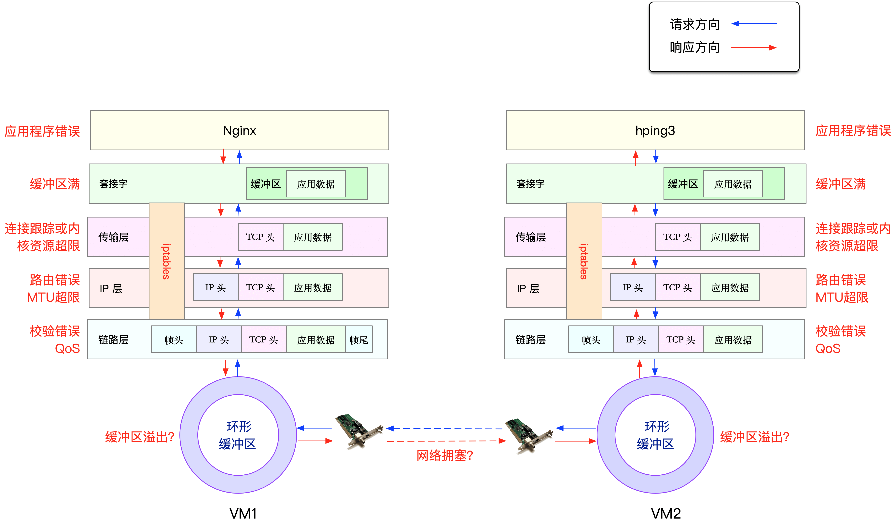

- 00 开篇词 别再让Linux性能问题成为你的绊脚石.md.html
- 01 如何学习Linux性能优化？.md.html
- 02 基础篇：到底应该怎么理解“平均负载”？.md.html
- 03 基础篇：经常说的 CPU 上下文切换是什么意思？（上）.md.html
- 04 基础篇：经常说的 CPU 上下文切换是什么意思？（下）.md.html
- 05 基础篇：某个应用的CPU使用率居然达到100%，我该怎么办？.md.html
- 06 案例篇：系统的 CPU 使用率很高，但为啥却找不到高 CPU 的应用？.md.html
- 07 案例篇：系统中出现大量不可中断进程和僵尸进程怎么办？（上）.md.html
- 08 案例篇：系统中出现大量不可中断进程和僵尸进程怎么办？（下）.md.html
- 09 基础篇：怎么理解Linux软中断？.md.html
- 10 案例篇：系统的软中断CPU使用率升高，我该怎么办？.md.html
- 11 套路篇：如何迅速分析出系统CPU的瓶颈在哪里？.md.html
- 12 套路篇：CPU 性能优化的几个思路.md.html
- 13 答疑（一）：无法模拟出 RES 中断的问题，怎么办？.md.html
- 14 答疑（二）：如何用perf工具分析Java程序？.md.html
- 15 基础篇：Linux内存是怎么工作的？.md.html
- 16 基础篇：怎么理解内存中的Buffer和Cache？.md.html
- 17 案例篇：如何利用系统缓存优化程序的运行效率？.md.html
- 18 案例篇：内存泄漏了，我该如何定位和处理？.md.html
- 19 案例篇：为什么系统的Swap变高了（上）.md.html
- 20 案例篇：为什么系统的Swap变高了？（下）.md.html
- 21 套路篇：如何“快准狠”找到系统内存的问题？.md.html
- 22 答疑（三）：文件系统与磁盘的区别是什么？.md.html
- 23 基础篇：Linux 文件系统是怎么工作的？.md.html
- 24 基础篇：Linux 磁盘I_O是怎么工作的（上）.md.html
- 25 基础篇：Linux 磁盘I_O是怎么工作的（下）.md.html
- 26 案例篇：如何找出狂打日志的“内鬼”？.md.html
- 27 案例篇：为什么我的磁盘I_O延迟很高？.md.html
- 28 案例篇：一个SQL查询要15秒，这是怎么回事？.md.html
- 29 案例篇：Redis响应严重延迟，如何解决？.md.html
- 30 套路篇：如何迅速分析出系统I_O的瓶颈在哪里？.md.html
- 31 套路篇：磁盘 I_O 性能优化的几个思路.md.html
- 32 答疑（四）：阻塞、非阻塞 I_O 与同步、异步 I_O 的区别和联系.md.html
- 33 关于 Linux 网络，你必须知道这些（上）.md.html
- 34 关于 Linux 网络，你必须知道这些（下）.md.html
- 35 基础篇：C10K 和 C1000K 回顾.md.html
- 36 套路篇：怎么评估系统的网络性能？.md.html
- 37 案例篇：DNS 解析时快时慢，我该怎么办？.md.html
- 38 案例篇：怎么使用 tcpdump 和 Wireshark 分析网络流量？.md.html
- 39 案例篇：怎么缓解 DDoS 攻击带来的性能下降问题？.md.html
- 40 案例篇：网络请求延迟变大了，我该怎么办？.md.html
- 41 案例篇：如何优化 NAT 性能？（上）.md.html
- 42 案例篇：如何优化 NAT 性能？（下）.md.html
- 43 套路篇：网络性能优化的几个思路（上）.md.html
- 44 套路篇：网络性能优化的几个思路（下）.md.html
- 45 答疑（五）：网络收发过程中，缓冲区位置在哪里？.md.html
- 46 案例篇：为什么应用容器化后，启动慢了很多？.md.html
- 47 案例篇：服务器总是时不时丢包，我该怎么办？（上）.md.html
- 48 案例篇：服务器总是时不时丢包，我该怎么办？（下）.md.html
- 49 案例篇：内核线程 CPU 利用率太高，我该怎么办？.md.html
- 50 案例篇：动态追踪怎么用？（上）.md.html
- 51 案例篇：动态追踪怎么用？（下）.md.html
- 52 案例篇：服务吞吐量下降很厉害，怎么分析？.md.html
- 53 套路篇：系统监控的综合思路.md.html
- 54 套路篇：应用监控的一般思路.md.html
- 55 套路篇：分析性能问题的一般步骤.md.html
- 56 套路篇：优化性能问题的一般方法.md.html
- 57 套路篇：Linux 性能工具速查.md.html
- 58 答疑（六）：容器冷启动如何性能分析？.md.html
- 加餐（一） 书单推荐：性能优化和Linux 系统原理.md.html
- 加餐（二） 书单推荐：网络原理和 Linux 内核实现.md.html
- 用户故事 “半路出家 ”，也要顺利拿下性能优化！.md.html
- 用户故事 运维和开发工程师们怎么说？.md.html
- 结束语 愿你攻克性能难关.md.html
- 捐赠
47 案例篇：服务器总是时不时丢包，我该怎么办？（上）
你好，我是倪朋飞。
上一节，我们梳理了，应用程序容器化后性能下降的分析方法。一起先简单回顾下。
容器利用 Linux 内核提供的命名空间技术，将不同应用程序的运行隔离起来，并用统一的镜像，来管理应用程序的依赖环境。这为应用程序的管理和维护，带来了极大的便捷性，并进一步催生了微服务、云原生等新一代技术架构。
不过，虽说有很多优势，但容器化也会对应用程序的性能带来一定影响。比如，上一节我们一起分析的 Java 应用，就容易发生启动过慢、运行一段时间后 OOM 退出等问题。当你碰到这种问题时，不要慌，我们前面四大基础模块中的各种思路，都依然适用。
实际上，我们专栏中的很多案例都在容器中运行。容器化后，应用程序会通过命名空间进行隔离。所以，你在分析时，不要忘了结合命名空间、cgroups、iptables 等来综合分析。比如：
cgroups 会影响容器应用的运行；
iptables 中的 NAT，会影响容器的网络性能；
叠加文件系统，会影响应用的 I/O 性能等。
关于 NAT 的影响，我在网络模块的 如何优化NAT性能 文章中，已经为你介绍了很多优化思路。今天，我们一起来看另一种情况，也就是丢包的分析方法。
所谓丢包，是指在网络数据的收发过程中，由于种种原因，数据包还没传输到应用程序中，就被丢弃了。这些被丢弃包的数量，除以总的传输包数，也就是我们常说的丢包率。丢包率是网络性能中最核心的指标之一。
丢包通常会带来严重的性能下降，特别是对 TCP 来说，丢包通常意味着网络拥塞和重传，进而还会导致网络延迟增大、吞吐降低。
接下来，我就以最常用的反向代理服务器 Nginx 为例，带你一起看看，如何分析网络丢包的问题。由于内容比较多，这个案例将分为上下两篇来讲解，今天我们先看第一部分内容。
案例准备
今天的案例需要用到两台虚拟机，还是基于 Ubuntu 18.04，同样适用于其他的 Linux 系统。我使用的案例环境如下所示：
机器配置：2 CPU，8GB 内存。
预先安装 docker、curl、hping3 等工具，如 apt install docker.io curl hping3。
这些工具，我们在前面的案例中已经多次使用，这里就不再重复介绍。
现在，打开两个终端，分别登录到这两台虚拟机中，并安装上述工具。
注意，以下所有命令都默认以 root 用户运行，如果你用普通用户身份登陆系统，请运行 sudo su root 命令，切换到 root 用户。
如果安装过程有问题，你可以先上网搜索解决，实在解决不了的，记得在留言区向我提问。
到这里，准备工作就完成了。接下来，我们正式进入操作环节。
案例分析
我们今天要分析的案例是一个 Nginx 应用，如下图所示，hping3 和 curl 是 Nginx 的客户端。

为了方便你运行，我已经把它打包成了一个 Docker 镜像，并推送到 Docker Hub 中。你可以直接按照下面的步骤来运行它。
在终端一中执行下面的命令，启动 Nginx 应用，并在80端口监听。如果一切正常，你应该可以看到如下的输出：
$ docker run --name nginx --hostname nginx --privileged -p 80:80 -itd feisky/nginx:drop
dae0202cc27e5082b282a6aeeb1398fcec423c642e63322da2a97b9ebd7538e0
然后，执行 docker ps 命令，查询容器的状态，你会发现容器已经处于运行状态（Up）了：
$ docker ps
CONTAINER ID IMAGE COMMAND CREATED STATUS PORTS NAMES
dae0202cc27e feisky/nginx:drop "/start.sh" 4 minutes ago Up 4 minutes 0.0.0.0:80->80/tcp nginx
不过，从 docker ps 的输出，我们只能知道容器处于运行状态，至于 Nginx 是否可以正常处理外部请求，还需要进一步的确认。
接着，我们切换到终端二中，执行下面的 hping3 命令，进一步验证 Nginx 是不是真的可以正常访问了。注意，这里我没有使用 ping，是因为 ping 基于 ICMP 协议，而 Nginx 使用的是 TCP 协议。
# -c表示发送10个请求，-S表示使用TCP SYN，-p指定端口为80
$ hping3 -c 10 -S -p 80 192.168.0.30
HPING 192.168.0.30 (eth0 192.168.0.30): S set, 40 headers + 0 data bytes
len=44 ip=192.168.0.30 ttl=63 DF id=0 sport=80 flags=SA seq=3 win=5120 rtt=7.5 ms
len=44 ip=192.168.0.30 ttl=63 DF id=0 sport=80 flags=SA seq=4 win=5120 rtt=7.4 ms
len=44 ip=192.168.0.30 ttl=63 DF id=0 sport=80 flags=SA seq=5 win=5120 rtt=3.3 ms
len=44 ip=192.168.0.30 ttl=63 DF id=0 sport=80 flags=SA seq=7 win=5120 rtt=3.0 ms
len=44 ip=192.168.0.30 ttl=63 DF id=0 sport=80 flags=SA seq=6 win=5120 rtt=3027.2 ms
--- 192.168.0.30 hping statistic ---
10 packets transmitted, 5 packets received, 50% packet loss
round-trip min/avg/max = 3.0/609.7/3027.2 ms
从 hping3 的输出中，我们可以发现，发送了 10 个请求包，却只收到了 5 个回复，50% 的包都丢了。再观察每个请求的 RTT 可以发现，RTT 也有非常大的波动变化，小的时候只有 3ms，而大的时候则有 3s。
根据这些输出，我们基本能判断，已经发生了丢包现象。可以猜测，3s 的 RTT ，很可能是因为丢包后重传导致的。那到底是哪里发生了丢包呢？
排查之前，我们可以回忆一下 Linux 的网络收发流程，先从理论上分析，哪里有可能会发生丢包。你不妨拿出手边的笔和纸，边回忆边在纸上梳理，思考清楚再继续下面的内容。
在这里，为了帮你理解网络丢包的原理，我画了一张图，你可以保存并打印出来使用：

从图中你可以看出，可能发生丢包的位置，实际上贯穿了整个网络协议栈。换句话说，全程都有丢包的可能。比如我们从下往上看：
在两台 VM 连接之间，可能会发生传输失败的错误，比如网络拥塞、线路错误等；
在网卡收包后，环形缓冲区可能会因为溢出而丢包；
在链路层，可能会因为网络帧校验失败、QoS 等而丢包；
在 IP 层，可能会因为路由失败、组包大小超过 MTU 等而丢包；
在传输层，可能会因为端口未监听、资源占用超过内核限制等而丢包；
在套接字层，可能会因为套接字缓冲区溢出而丢包；
在应用层，可能会因为应用程序异常而丢包；
此外，如果配置了 iptables 规则，这些网络包也可能因为 iptables 过滤规则而丢包。
当然，上面这些问题，还有可能同时发生在通信的两台机器中。不过，由于我们没对 VM2 做任何修改，并且 VM2 也只运行了一个最简单的 hping3 命令，这儿不妨假设它是没有问题的。
为了简化整个排查过程，我们还可以进一步假设， VM1 的网络和内核配置也没问题。这样一来，有可能发生问题的位置，就都在容器内部了。
现在我们切换回终端一，执行下面的命令，进入容器的终端中：
$ docker exec -it nginx bash
root@nginx:/#
在这里简单说明一下，接下来的所有分析，前面带有 root@nginx:/# 的操作，都表示在容器中进行。
注意：实际环境中，容器内部和外部都有可能发生问题。不过不要担心，容器内、外部的分析步骤和思路都是一样的，只不过要花更多的时间而已。
那么， 接下来，我们就可以从协议栈中，逐层排查丢包问题。
链路层
首先，来看最底下的链路层。当缓冲区溢出等原因导致网卡丢包时，Linux 会在网卡收发数据的统计信息中，记录下收发错误的次数。
你可以通过 ethtool 或者 netstat ，来查看网卡的丢包记录。比如，可以在容器中执行下面的命令，查看丢包情况：
root@nginx:/# netstat -i
Kernel Interface table
Iface MTU RX-OK RX-ERR RX-DRP RX-OVR TX-OK TX-ERR TX-DRP TX-OVR Flg
eth0 100 31 0 0 0 8 0 0 0 BMRU
lo 65536 0 0 0 0 0 0 0 0 LRU
输出中的 RX-OK、RX-ERR、RX-DRP、RX-OVR ，分别表示接收时的总包数、总错误数、进入Ring Buffer 后因其他原因（如内存不足）导致的丢包数以及 Ring Buffer 溢出导致的丢包数。
TX-OK、TX-ERR、TX-DRP、TX-OVR 也代表类似的含义，只不过是指发送时对应的各个指标。
注意，由于 Docker 容器的虚拟网卡，实际上是一对 veth pair，一端接入容器中用作 eth0，另一端在主机中接入 docker0 网桥中。veth 驱动并没有实现网络统计的功能，所以使用 ethtool -S 命令，无法得到网卡收发数据的汇总信息。
从这个输出中，我们没有发现任何错误，说明容器的虚拟网卡没有丢包。不过要注意，如果用 tc 等工具配置了 QoS，那么 tc 规则导致的丢包，就不会包含在网卡的统计信息中。
所以接下来，我们还要检查一下 eth0 上是否配置了 tc 规则，并查看有没有丢包。我们继续容器终端中，执行下面的 tc 命令，不过这次注意添加 -s 选项，以输出统计信息：
root@nginx:/# tc -s qdisc show dev eth0
qdisc netem 800d: root refcnt 2 limit 1000 loss 30%
Sent 432 bytes 8 pkt (dropped 4, overlimits 0 requeues 0)
backlog 0b 0p requeues 0
从 tc 的输出中可以看到， eth0 上面配置了一个网络模拟排队规则（qdisc netem），并且配置了丢包率为 30%（loss 30%）。再看后面的统计信息，发送了 8 个包，但是丢了 4 个。
看来，应该就是这里，导致 Nginx 回复的响应包，被 netem 模块给丢了。
既然发现了问题，解决方法也就很简单了，直接删掉 netem 模块就可以了。我们可以继续在容器终端中，执行下面的命令，删除 tc 中的 netem 模块：
root@nginx:/# tc qdisc del dev eth0 root netem loss 30%
删除后，问题到底解决了没？我们切换到终端二中，重新执行刚才的 hping3 命令，看看现在还有没有问题：
$ hping3 -c 10 -S -p 80 192.168.0.30
HPING 192.168.0.30 (eth0 192.168.0.30): S set, 40 headers + 0 data bytes
len=44 ip=192.168.0.30 ttl=63 DF id=0 sport=80 flags=SA seq=0 win=5120 rtt=7.9 ms
len=44 ip=192.168.0.30 ttl=63 DF id=0 sport=80 flags=SA seq=2 win=5120 rtt=1003.8 ms
len=44 ip=192.168.0.30 ttl=63 DF id=0 sport=80 flags=SA seq=5 win=5120 rtt=7.6 ms
len=44 ip=192.168.0.30 ttl=63 DF id=0 sport=80 flags=SA seq=6 win=5120 rtt=7.4 ms
len=44 ip=192.168.0.30 ttl=63 DF id=0 sport=80 flags=SA seq=9 win=5120 rtt=3.0 ms
--- 192.168.0.30 hping statistic ---
10 packets transmitted, 5 packets received, 50% packet loss
round-trip min/avg/max = 3.0/205.9/1003.8 ms
不幸的是，从 hping3 的输出中，我们可以看到，跟前面现象一样，还是 50% 的丢包；RTT 的波动也仍旧很大，从 3ms 到 1s。
显然，问题还是没解决，丢包还在继续发生。不过，既然链路层已经排查完了，我们就继续向上层分析，看看网络层和传输层有没有问题。
网络层和传输层
我们知道，在网络层和传输层中，引发丢包的因素非常多。不过，其实想确认是否丢包，是非常简单的事，因为 Linux 已经为我们提供了各个协议的收发汇总情况。
我们继续在容器终端中，执行下面的 netstat -s 命令，就可以看到协议的收发汇总，以及错误信息了：
root@nginx:/# netstat -s
Ip:
Forwarding: 1 //开启转发
31 total packets received //总收包数
0 forwarded //转发包数
0 incoming packets discarded //接收丢包数
25 incoming packets delivered //接收的数据包数
15 requests sent out //发出的数据包数
Icmp:
0 ICMP messages received //收到的ICMP包数
0 input ICMP message failed //收到ICMP失败数
ICMP input histogram:
0 ICMP messages sent //ICMP发送数
0 ICMP messages failed //ICMP失败数
ICMP output histogram:
Tcp:
0 active connection openings //主动连接数
0 passive connection openings //被动连接数
11 failed connection attempts //失败连接尝试数
0 connection resets received //接收的连接重置数
0 connections established //建立连接数
25 segments received //已接收报文数
21 segments sent out //已发送报文数
4 segments retransmitted //重传报文数
0 bad segments received //错误报文数
0 resets sent //发出的连接重置数
Udp:
0 packets received
...
TcpExt:
11 resets received for embryonic SYN_RECV sockets //半连接重置数
0 packet headers predicted
TCPTimeouts: 7 //超时数
TCPSynRetrans: 4 //SYN重传数
...
netstat 汇总了 IP、ICMP、TCP、UDP 等各种协议的收发统计信息。不过，我们的目的是排查丢包问题，所以这里主要观察的是错误数、丢包数以及重传数。
根据上面的输出，你可以看到，只有 TCP 协议发生了丢包和重传，分别是：
11 次连接失败重试（11 failed connection attempts）
4 次重传（4 segments retransmitted）
11 次半连接重置（11 resets received for embryonic SYN_RECV sockets）
4 次 SYN 重传（TCPSynRetrans）
7 次超时（TCPTimeouts）
这个结果告诉我们，TCP 协议有多次超时和失败重试，并且主要错误是半连接重置。换句话说，主要的失败，都是三次握手失败。
不过，虽然在这儿看到了这么多失败，但具体失败的根源还是无法确定。所以，我们还需要继续顺着协议栈来分析。接下来的几层又该如何分析呢？你不妨自己先来思考操作一下，下一节我们继续来一起探讨。
小结
网络丢包，通常会带来严重的性能下降，特别是对 TCP 来说，丢包通常意味着网络拥塞和重传，进一步还会导致网络延迟增大、吞吐降低。
今天的这个案例，我们学会了如何从链路层、网络层和传输层等入手，分析网络丢包的问题。不过，案例最后，我们还没有找出最终的性能瓶颈，下一节，我将继续为你讲解。
思考
最后，给你留一个思考题，也是案例最后提到的问题。
今天我们只分析了链路层、网络层以及传输层等。而根据 TCP/IP 协议栈和 Linux 网络收发原理，还有很多我们没分析到的地方。那么，接下来，我们又该如何分析，才能破获这个案例，找出“真凶”呢？
欢迎在留言区和我讨论，也欢迎把这篇文章分享给你的同事、朋友。我们一起在实战中演练，在交流中进步。
© 2019 - 2023 Liangliang Lee. Powered by gin and hexo-theme-book.